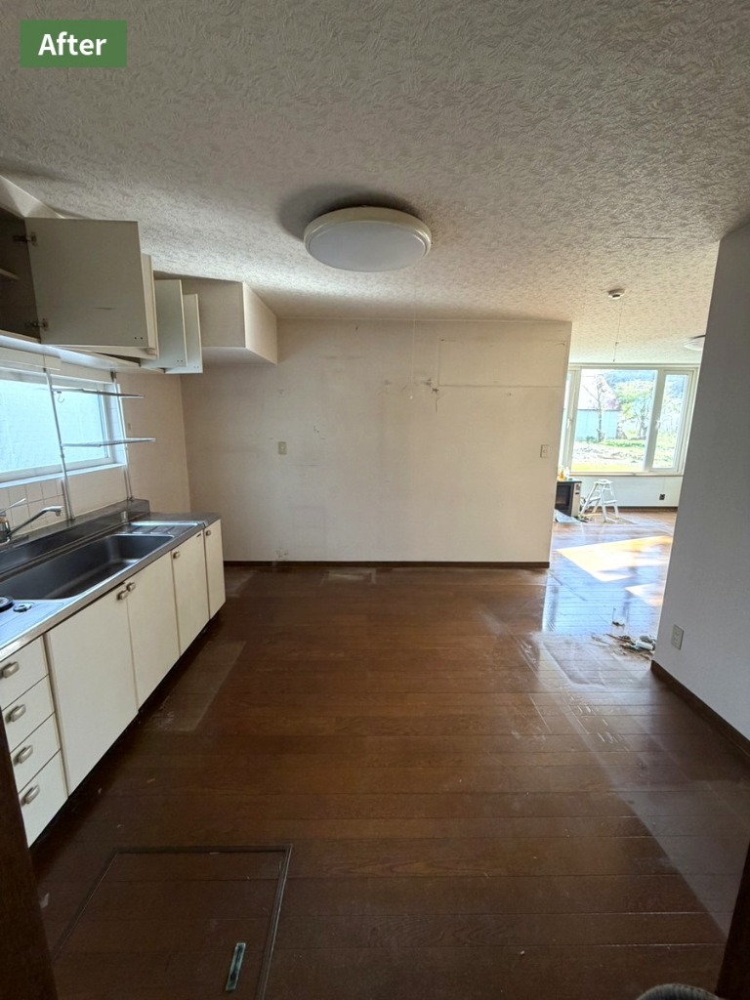
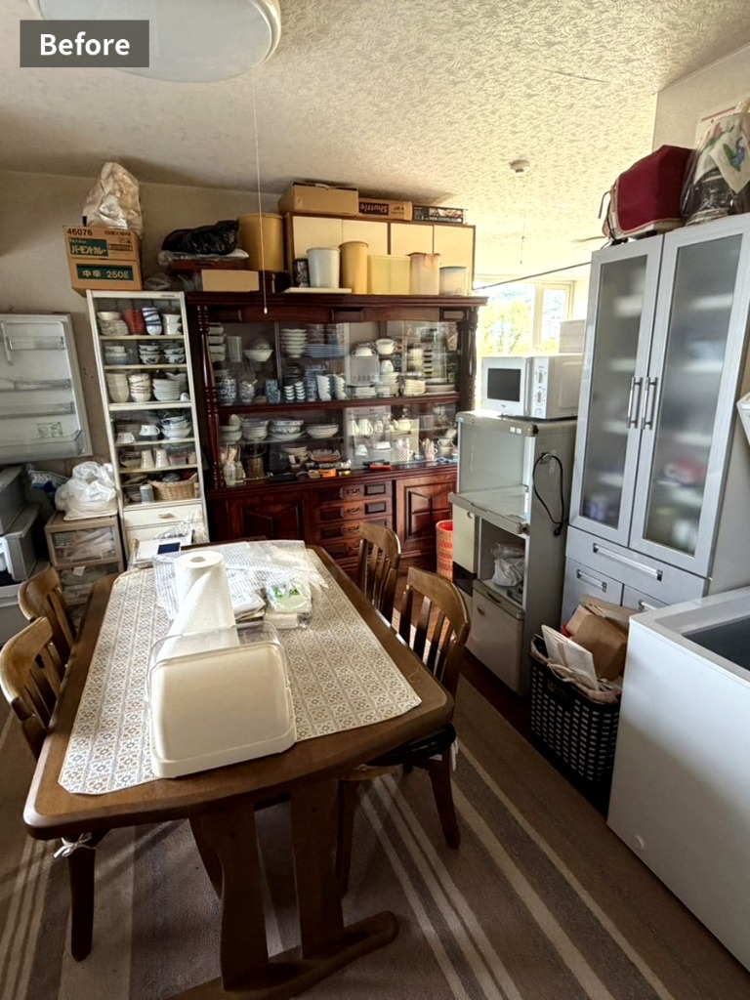
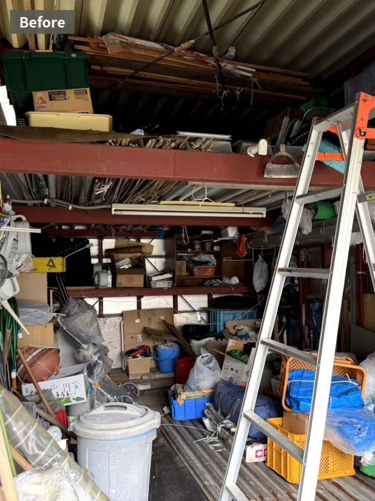
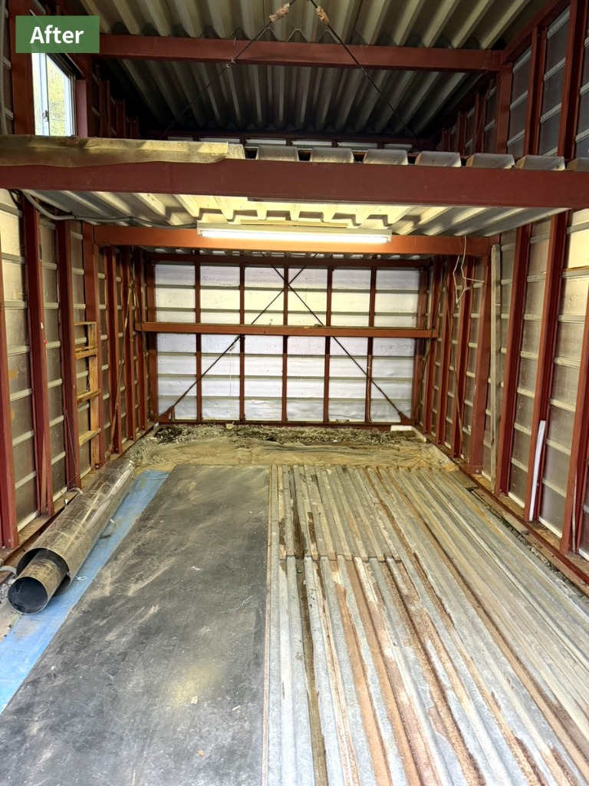

実家じまい
空き家になるご実家や、お住まいの整理について。ご希望やお品物の量を確認し、進め方をご相談します。
小樽市・近郊の片付け相談
ご実家の片付けや、これからの暮らしに向けた整理をお手伝いします。買取できる品の査定も含めて、まずは状況をお聞かせください。
受付時間 10:00〜18:00

OUR SUPPORT
「何から始めたらいいか分からない」「遠方に住んでいて片付けに通えない」など、ご事情に合わせてお話を伺います。
空き家になるご実家や、お住まいの整理について。ご希望やお品物の量を確認し、進め方をご相談します。
思い出の品と向き合いながら、残すもの・手放すものを整理するお手伝いをします。
これからの暮らしを考えた身の回りの整理も、ご本人やご家族のペースに合わせてご相談いただけます。
買取のご相談も承ります。
お品物の状態や種類を確認し、買取できるものは査定いたします。査定内容と片付けの費用は分けてご案内します。
BEFORE & AFTER
キッチン・ダイニングや物置・倉庫の片付け事例をご紹介します。

キッチンとダイニングの片付け事例。整理の範囲や残す品は、ご希望を伺って決めていきます。


物置・倉庫の片付け事例。写真に写っている品物の取り扱いは、現地確認のうえご案内します。
HOW TO START
まずはお困りごとをお聞かせください。作業内容と費用を確認してから、ご依頼いただけます。
お電話またはLINEで、整理したい場所やご希望をお知らせください。
品物や現地の状況を確認し、対応できる内容と費用をご案内します。
お見積り内容にご納得いただいた後、日程や進め方を相談して作業します。
※対応内容や費用は、地域・品物・現地の状況により異なります。お見積りの条件を確認のうえご依頼ください。
FAQ
お見積りの内容をご確認いただき、ご納得された場合にご依頼ください。見積りの条件やキャンセル時の扱いは、相談時にご確認ください。
まずはお電話やLINEで状況をお聞かせください。立ち会いの要否や当日の進め方は、現地の状況を確認してご相談します。
品物の種類や量、地域によって対応が異なります。買取の可否と、買取対象外の品物の取り扱いを分けてご案内しますので、事前にご相談ください。
場所や作業内容によって対応可否が異なります。住所とご希望内容をお知らせください。
CONTACT
片付けたい場所や気になっていることなど、分かる範囲でお聞かせください。
リサイクルショップ夢工房 営業時間 10:00〜18:00